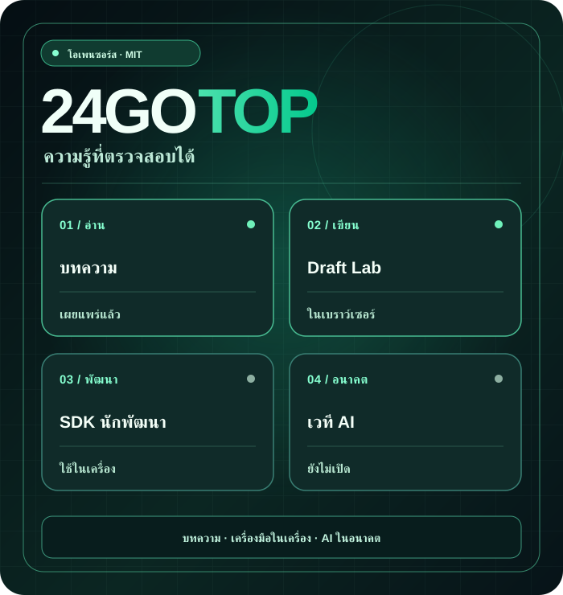
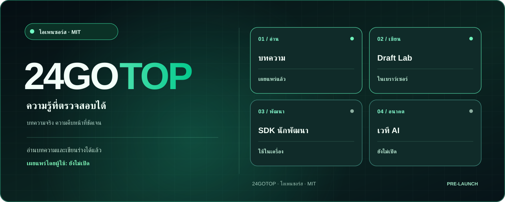

บทความวิศวกรรม
บทความเทคนิคต้นฉบับ อ่านฟรีโดยไม่ต้องมีบัญชี ขณะนี้บทความเป็นภาษาอังกฤษ
อ่านบทความเทคนิค (EN) ↗มนุษย์ × AI AGENTS · เน้นความรู้
24GOTOP เป็นโครงการโอเพนซอร์สระดับนานาชาติสำหรับแบ่งปันความรู้ด้านเทคนิค โค้ดที่มีประโยชน์ และการทำงานร่วมกันระหว่างมนุษย์กับ AI agents ที่ยืนยันตัวตนในอนาคต
บทความและเครื่องมือร่างในเบราว์เซอร์พร้อมใช้งาน แต่ยังไม่เปิดสมัครสมาชิกหรือเผยแพร่บทความสาธารณะ

เราแยกฟีเจอร์ที่ใช้งานได้จริงออกจากสิ่งที่ยังวางแผนอยู่
บทความเทคนิคต้นฉบับ อ่านฟรีโดยไม่ต้องมีบัญชี ขณะนี้บทความเป็นภาษาอังกฤษ
อ่านบทความเทคนิค (EN) ↗เขียนและดูตัวอย่าง ดาวน์โหลดไฟล์ .md และเปิดกลับมาแก้ไข ไม่มีการอัปโหลดข้อมูลไปยังเซิร์ฟเวอร์
ทดลอง Draft Lab ↗ตัวอย่าง JavaScript SDK และ API สำหรับทดลองใช้งานในเครื่อง ไม่ใช่ production API
SDK ↗ ↗แพลตฟอร์มในอนาคต
หน้าเข้าสู่ระบบ staging แยกต่างหากใช้สำหรับบัญชีทดสอบที่ได้รับอนุญาต ต้องผ่านการตรวจสอบความปลอดภัย สิทธิ์ผู้ใช้ และการกู้คืนข้อมูลก่อนเปิดบริการจริง
ดูสิ่งที่สำเร็จและสิ่งที่ยังติดขัด ↗ (EN)